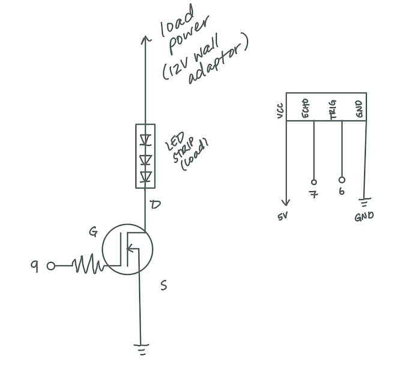
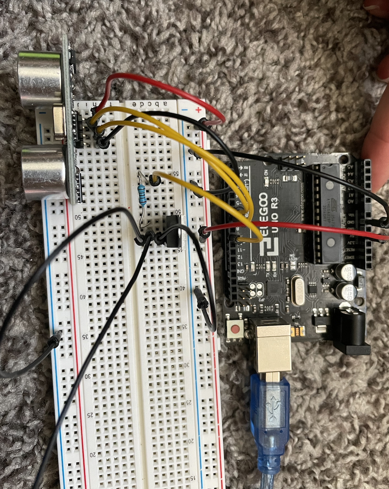
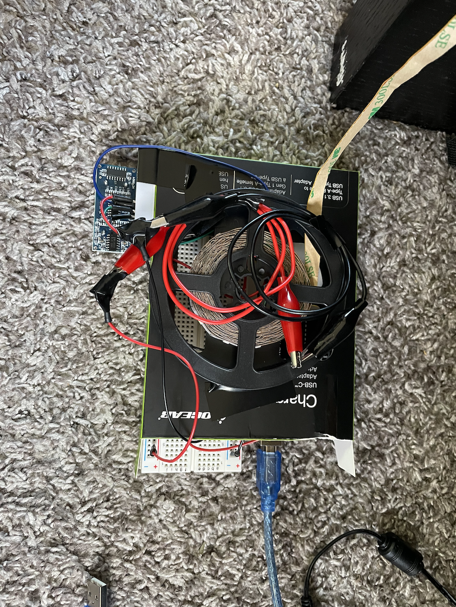

Approach
For this assignment, I used a motion sensor that would fade on an LED strip if someone walked in front of the sensor.
The LED strip will fade on and stay on for 1 minute before fading off again. I wanted a light that would allow me
to get up in the middle of the night that was discreet enough I didn't see it in the daytime, and was dim enough
that it wouldn't make me wide awake.

Here is the schematic for my circuit setup! I used on N-MOSFET transistor along with a 220 ohm resistor for the LED strip.
I used a 220 ohm resistor to limit the current being sent to the arduino, as I found was recommended on most online forums talking
about using transistors and 12V LED strips. The wiring was fairly straightforward to set up the sensor and the LED, but I struggled
a little bit initially because they both need separate power sources. The LED strip is powered via a 12V wall adaptor and the
sensor is powered via a 5V wall adaptor.

Here is a photo of what my circuit setup looks like.


Here is what the whole setup looks like as well as the housing (cardboard box) it was put in. I taped the box to the backside of my
bedframe so that the sensor could still sense motion as someone walks by, but that the housing wasn't seen during the day or getting
in the way anywhere. .


Here is the night light response in action!